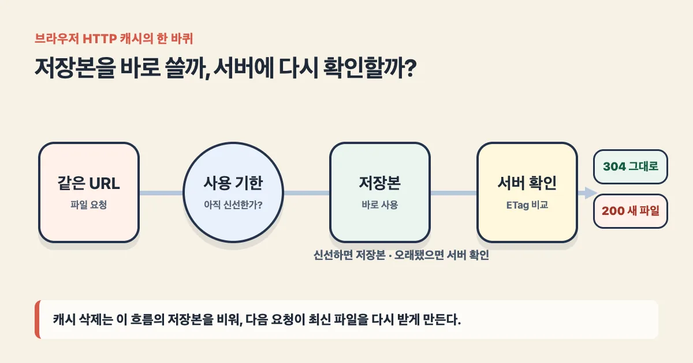
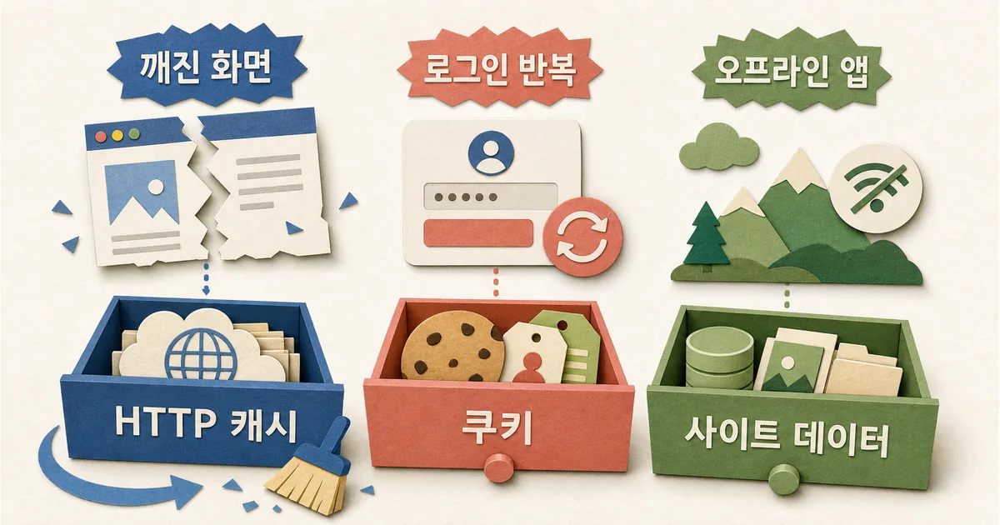

2026. 9. 1 (화) · 약 9분
웹사이트가 업데이트됐다는 안내를 받았는데 내 화면만 글자와 버튼이 어긋나 보일 때가 있다. 서버가 아직 고장 났다고 생각하기 쉽지만, 브라우저가 어제 받은 화면 조각을 다시 쓰는 중일 수 있다. 캐시를 지우면 그 오래된 조각 대신 최신 파일을 다시 받는다. 그래서 깨진 화면이 맞춰질 수 있다. 다만 로그인 반복이나 오프라인 앱 오류도 같은 방법으로 고쳐질까?
궁금한 IT 원리
30초 요약
- 브라우저 캐시는 같은 URL에서 받은 화면 파일을 저장해 다음 방문을 빠르게 만든다.
- 캐시 삭제는 오래된 CSS·JavaScript·이미지를 버리고 최신 파일을 다시 받아 깨진 화면을 맞출 수 있다.
- 로그인 반복이나 오프라인 앱 오류는 쿠키·사이트 데이터·서비스 워커 문제일 수 있어 캐시 삭제만으로는 부족하다.
먼저 알아둘 말
- 브라우저 캐시
- 한 번 받은 웹페이지 파일을 다시 내려받지 않도록 브라우저가 잠시 보관하는 공간이다.
- Cache-Control
- 서버가 응답을 어디에 얼마나 오래 저장하고 언제 다시 확인할지 알려 주는 HTTP 지시문이다.
- ETag
- 브라우저와 서버가 같은 파일 버전을 갖고 있는지 비교하는 짧은 식별표다.
- 강력 새로고침
- 평소 새로고침보다 저장된 응답을 덜 신뢰하고 서버에서 파일을 다시 받도록 요구하는 동작이다.
오늘의 핵심뉴스
심층 분석 · HTTP 캐시 표준과 브라우저 공식·교육 자료 · 2022. 6. 6
브라우저 캐시 삭제와 HTTP 재검증의 원리
브라우저는 저장된 응답의 사용 기한과 검증표를 확인하며, 캐시 삭제는 오래된 로컬 응답을 버리고 새 응답을 받게 한다.
빠르게 열려고 만든 서랍이 어제 화면을 꺼낸다
웹페이지 하나는 HTML 문서만으로 보이지 않는다. 글꼴과 색을 정하는 CSS, 버튼을 움직이는 JavaScript, 아이콘과 이미지가 따로 도착해 한 화면으로 조립된다. 브라우저 캐시는 이 파일들의 응답을 로컬 저장 공간에 두고 다음 방문에 다시 쓴다.
이 덕분에 같은 이미지를 매번 내려받지 않아도 되고 느린 네트워크에서도 화면이 빨리 뜬다. 문제는 서버에 새 파일을 올렸는데 예전 파일과 주소가 같을 때다. 새 HTML이 이전 CSS나 JavaScript와 섞이면 버튼 위치가 어긋나거나 눌러도 반응하지 않는 화면이 생길 수 있다.

캐시 삭제는 이 서랍을 비워 다음 요청이 이전 응답에 기대지 못하게 한다. 브라우저는 네트워크로 다시 나가 최신 HTML·CSS·JavaScript·이미지를 받는다. 서버가 이미 정상이고 로컬 저장본만 낡았다면 화면이 바로 맞춰지는 이유다.
같은 URL이 캐시 서랍의 이름표가 된다
HTTP 캐시는 보통 요청 방법과 URL을 기본 열쇠로 삼고, 서버가 보낸 Cache-Control 지시를 따라 응답을 저장한다. max-age=3600이라면 받은 뒤 3,600초 동안 신선한 응답으로 볼 수 있다. 그 시간에는 서버에 묻지 않고 저장본을 바로 쓸 수 있다.
| 지시 | 저장 여부 | 다시 쓸 조건 | 뜻 |
|---|---|---|---|
| max-age=3600 | 저장 가능 | 1시간 동안 바로 사용 | 정한 시간 안에는 신선함 |
| no-cache | 저장 가능 | 매번 서버 검증 뒤 사용 | 저장 금지가 아님 |
| no-store | 저장하지 않음 | 매번 전체 응답 요청 | 보관 자체를 금지 |
여기서 자주 헷갈리는 말이 no-cache다. 이름과 달리 저장을 금지하지 않는다. 저장본을 쓰기 전에 서버에 지금도 같은 버전인지 확인하라는 뜻이다. 저장 자체를 막으려면 no-store가 필요하다. 캐시를 무조건 끄기보다 파일 성격에 맞춰 검증 규칙을 주는 이유다.
ETag는 파일에 붙인 버전 확인표다
저장본의 사용 기한이 끝났다고 파일 전체를 다시 받을 필요는 없다. 서버가 응답에 ETag를 붙였다면 브라우저는 다음 요청에 그 값을 If-None-Match로 보낸다. 서버의 현재 ETag와 같으면 내용이 바뀌지 않았다는 뜻이다.
같은 경우 서버는 본문 없이 304 Not Modified를 돌려주고 브라우저는 저장본을 쓴다. 값이 다르면 200 OK와 새 파일을 보낸다. Last-Modified도 비슷한 역할을 하지만 수정 시각을 비교한다. 캐시는 버리는 장치가 아니라 저장과 확인을 오가는 장치에 가깝다.

평소 새로고침은 저장본을 검증해 계속 쓸 수 있다. 강력 새로고침은 캐시 사용을 우회해 파일을 다시 받는 쪽으로 요청한다. Chrome 개발자 도구의 Empty Cache and Hard Reload는 개발자 도구가 열린 상태에서 캐시를 비우고 다시 불러오는 진단용 동작이다.
캐시를 지워도 안 고쳐지는 세 가지 경계
브라우저에는 HTTP 캐시만 있는 것이 아니다. 로그인 정보는 주로 쿠키에, 앱의 설정과 임시 작업은 Web Storage나 IndexedDB에, 오프라인 응답은 서비스 워커가 관리하는 Cache API에 남을 수 있다. Cache API는 HTTP 캐시 헤더를 자동으로 따르지도 않는다.
- 글자·색·버튼 배치가 예전 모습과 섞였다면 먼저 강력 새로고침으로 HTTP 캐시 가능성을 본다.
- 로그인이 계속 풀리거나 계정이 바뀐다면 쿠키와 인증 만료를 확인한다.
- 오프라인 웹앱이 예전 데이터를 고집한다면 서비스 워커와 Cache API 갱신 로직을 확인한다.
- 다른 기기에서도 같은 오류라면 내 브라우저보다 서버·CDN 배포 상태를 먼저 의심한다.
Chrome의 ‘캐시된 이미지 및 파일’과 ‘쿠키 및 기타 사이트 데이터’가 따로 나뉘는 것도 이 때문이다. 화면 파일만 다시 받으려면 캐시 항목만 지울 수 있다. 쿠키까지 지우면 사이트에서 로그아웃되거나 저장된 환경 설정이 사라질 수 있으므로 처음부터 모두 선택할 이유는 없다.
개발자는 주소를 바꿔 버전 충돌을 예방한다
내용이 바뀐 CSS나 JavaScript에 계속 같은 URL을 쓰면 오래 살아 있는 캐시를 즉시 회수하기 어렵다. 그래서 빌드 결과의 파일명에 내용 해시를 넣는다. app.a1b2.js가 app.c3d4.js로 바뀌면 브라우저는 다른 URL로 보고 새 파일을 받는다.
| 보이는 증상 | 먼저 해볼 일 | 개발자 확인 | 예방 |
|---|---|---|---|
| 예전 색·버튼 | 강력 새로고침 | CSS·JS 응답과 Age | 파일명에 내용 해시 |
| 일부 사용자만 오류 | 사이트별 캐시 삭제 | Cache-Control·ETag | HTML은 재검증 |
| 모든 기기에서 오류 | 다른 네트워크 비교 | CDN·원본 배포 | 퍼지와 배포 순서 |
버전이 붙은 정적 파일은 max-age를 길게 주고 immutable로 다시 확인할 필요가 없다고 알릴 수 있다. 반대로 주소가 고정된 HTML은 no-cache와 ETag로 매번 변경 여부를 확인하게 하는 편이 안전하다. 최신 HTML이 최신 해시 파일을 가리키면 서로 다른 세대가 섞일 가능성이 줄어든다.
지우기 전에 범위를 좁히면 데이터도 지킨다
내 화면만 깨졌다면 일반 새로고침, 강력 새로고침, 사이트별 캐시 삭제 순으로 범위를 넓힌다. 해결되지 않으면 쿠키·사이트 저장소·서비스 워커, 서버와 CDN 순으로 층을 옮겨 본다. 이렇게 하면 캐시의 속도 이점은 살리고 로그인과 오프라인 데이터는 불필요하게 지우지 않을 수 있다.
캐시 삭제가 화면을 고치는 까닭은 브라우저가 문제를 수리해서가 아니라, 낡은 조각을 버리고 서버의 최신 조각으로 다시 조립하기 때문이다.
참고한 자료
캐시는 인터넷을 빠르게 만드는 장치라서 없애야 할 쓰레기가 아니다. 문제는 같은 주소의 파일이 바뀌었는데 브라우저가 이전 조각을 계속 유효하다고 믿을 때 생긴다. 사용자는 강력 새로고침과 사이트별 캐시 삭제로 원인을 좁힐 수 있고, 개발자는 URL 버전과 검증 헤더로 애초에 서로 다른 버전이 섞이지 않게 해야 한다. 깨진 웹페이지 하나에서 먼저 강력 새로고침을 시도하고, 해결되면 개발자 도구의 Network에서 이전 파일의 URL과 Cache-Control·ETag를 확인한다.